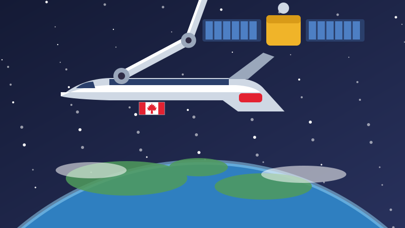
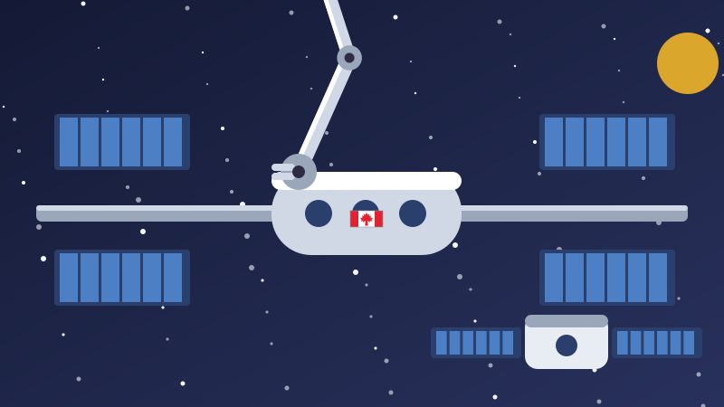

🚀 Pour les enfants
Le Canada a construit un bras et l'a envoyé dans l'espace
Le Canada n'est pas célèbre pour ses fusées. Le Canada est célèbre pour le bras installé au bout de l'une d'elles.

Un pays qui a construit le bras
Dans les années 1970, les États-Unis construisaient une navette spatiale. Il leur fallait quelque chose qui puisse sortir de la soute et soulever des objets : des satellites à relâcher, des satellites à attraper et à ramener.
Le Canada a dit qu'il construirait le bras. Des ingénieurs de Spar Aerospace, à Toronto, avec CAE, DSMA et le Conseil national de recherches, ont conçu un bras robotisé avec une épaule, un coude et un poignet, comme le vôtre.
Il mesurait 15 mètres, environ la longueur d'un autobus scolaire, et ne pesait qu'environ 410 kilogrammes. Il a volé pour la première fois le 13 novembre 1981, à bord de la navette Columbia. Sur le côté était peint un seul mot : CANADA.
Fort, mais délicat
Voici la partie étrange. Dans l'espace, rien ne pèse, alors un bras mince et léger peut quand même déplacer quelque chose d'énorme. L'Agence spatiale canadienne indique que le Canadarm pouvait déplacer des objets pesant jusqu'à 266 000 kilogrammes dans l'espace, en consommant moins d'électricité qu'une bouilloire.
Être fort n'était pas le plus difficile. Être délicat, oui. Le bras bougeait lentement, exprès. Un satellite est fragile, et on ne peut pas s'excuser auprès d'un objet qu'on vient de plier en deux à deux cents kilomètres du sol.
Un astronaute le pilotait depuis l'intérieur de la navette, en regardant par un hublot et sur des caméras, avec deux manettes. L'astronaute canadien Chris Hadfield a été le premier Canadien à le piloter, en 1995.
Le Canadarm a volé 90 fois en 30 ans et a pris sa retraite en juillet 2011. Vous pouvez aller voir le tout premier. Il se trouve au Musée de l'aviation et de l'espace du Canada, à Ottawa.
Le bras qui marche
En avril 2001, le Canada a envoyé un deuxième bras, plus grand : le Canadarm2, long de 17 mètres. Il vit à l'extérieur de la Station spatiale internationale et n'est jamais revenu.
Le Canadarm2 a une main à CHAQUE bout. Il n'a donc pas besoin de rester au même endroit. Il s'agrippe d'une main, lâche de l'autre, et bascule, bout par bout, comme une chenille arpenteuse qui traverse une feuille. C'est ainsi qu'il se déplace sur la station.
Il a construit la majeure partie de la station, morceau par morceau. Et quand un vaisseau de ravitaillement arrive avec de la nourriture et du matériel, il ne s'amarre pas tout seul. Le Canadarm2 tend le bras et l'attrape. En 2021, il en avait attrapé plus de quarante.
Le 28 avril 2001, les deux bras canadiens ont travaillé ensemble pour la première fois, se passant un objet de l'un à l'autre. On a appelé cela la première poignée de main robotisée dans l'espace.

Dextre, le robot bricoleur
En mars 2008, le Canada a envoyé un troisième robot, et c'est le plus étrange des trois. Dextre a deux bras, longs chacun d'environ trois mètres et demi, et il se fixe au bout du Canadarm2 comme une main au bout d'un bras.
Dextre s'occupe des petits travaux délicats à l'extérieur : changer des batteries, remplacer des pièces brisées, détecter des fuites. Il travaille à quelques millimètres près, soit moins que l'épaisseur d'un crayon.
Chaque tâche accomplie par Dextre est une tâche qu'un astronaute n'a pas à aller faire dehors. Sortir, c'est des heures de préparation, une combinaison lourde et un vrai danger. Un robot capable de changer une batterie est un robot qui protège des gens.
Le bras est redescendu sur Terre
Voici la partie que presque personne ne connaît. Les gens qui ont trouvé comment déplacer un bras robotisé avec une grande précision dans l'espace se sont servis de ce qu'ils avaient appris pour construire des bras robotisés destinés aux hôpitaux.
En 2008, un robot appelé neuroArm, construit avec ce même savoir-faire canadien, a aidé des chirurgiens de Calgary à retirer une tumeur du cerveau d'une jeune femme. Plus tard, la même entreprise a travaillé avec SickKids, à Toronto, sur un bras conçu pour opérer des enfants.
Ainsi, une machine construite pour tenir un satellite dans le noir, à deux cents kilomètres d'altitude, nous a appris à tenir une personne avec beaucoup de soin dans une salle pleine de lumières.
Le Canada construit maintenant un troisième bras, le Canadarm3, assez intelligent pour accomplir certaines tâches sans que personne lui dise quoi faire. Il était d'abord prévu pour une petite station en orbite autour de la Lune. En 2026, ce plan a changé, et le Canada a annoncé qu'il utiliserait plutôt ces travaux pour aider les astronautes à la surface de la Lune. Où qu'il aboutisse, il portera toujours CANADA sur le côté.
Des mots à connaître
- Satellite
- Une machine qui tourne autour de la Terre et envoie des images ou des messages.
- Soute
- Le grand espace ouvert au milieu de la navette où l'on transportait des objets.
- Station spatiale
- Une maison dans l'espace où des astronautes vivent et travaillent pendant des mois.
- Sortie dans l'espace
- Quand un astronaute sort du vaisseau en combinaison.
Essaie maintenant trois questions
Pas de chronomètre et aucune note à craindre. Chaque réponse t'explique pourquoi.
À propos de ce quiz
Cette histoire explique comment le Canada en est venu à construire les bras robotisés utilisés dans l'espace : le Canadarm, qui a volé pour la première fois sur la navette en 1981, le Canadarm2, qui a aidé à construire la Station spatiale internationale et s'y déplace bout par bout, le robot à deux bras Dextre, et comment le même savoir-faire a ensuite servi à construire des bras robotisés pour des hôpitaux canadiens.
Elle est écrite en phrases courtes pour les enfants de six à neuf ans, avec une image dessinée pour ce site et trois questions à la fin. Touchez le bouton de lecture à voix haute et la page lira les questions à haute voix.